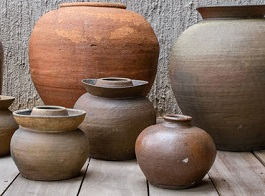

Bihar has a rich historical past.Right from the ancient history to the
present century it was always a center of attention of historians. Powerful dynasty like
Magadha Majanapadas, Mauryan Empire and Gupta Empire had flourished in the fertile land of
Bihar. Some great name of Indian History like Ashok, Chandragupta Mauryan and the symbol of
peace and non-violence Gautam Buddha had their root in Bihar. Some of the great religions of
the world like Buddhism and Jainism had sprouted form here. Thus naturally Bihar is rich
with varied arts and crafts. Throughout the generation the rich heritage of art and crafts
has been preserved though there are slight variations due to introduction
of modern technologies.
The unique features of art and crafts in Bihar are the intrinsic
beauties and great creativeness. These creative beauties have been preserved in various
forms like in ancient stone, wooden structures, grass-clothes, lacquer and metal-wares.
Bihar's craftsmen have excelled in manufacturing artistic goods which have great demands
in local and international market. The fine skill and perfection of Bihari craftsmen is
clearly manifested from various archeological excavations in Kumhrar, Bulandibagh, Nalanda
and other places. Pottery, wooden articles, metal wares, stone wares, jewelry, lacquer
works, kashida, sikki and moonj wares, wooden and clay toys, zari,reatistic textile fabrics
and printing on cloth are some of the contemporary crafts of Bihar which are known in Indian
as well as international markets for their artistic beauties and innovations. Another chief
feature of Bihar’s handicraft is their practicality and usefulness in everyday life
like bangle making, khatwa works and stone works. However reasonable price the most
important feature of the art and crafts in Bihar because of which there are in great demands
in Indian as well as in foreign markets.
MADHUBANI
PAINTINGS
Madhubani
paintings as the name says get its name from Mithila region of Bihar where it is widely
practised
particularly by women. The history of Madhubani paintings goes back to the time of Ramayana.
Originally the painting was done on done on cloth, hand-made paper and canvas. Madhubani
painting
mostly depict nature and Hindu religious figures and the themes generally associated with
Hindu
deities, Natural objects like sun, moon, and religious plants like tulsi.
ROCK
PAINTINGS
Rock
paintings are a particular form of paintings done on the walls and ceilings of the cave
shelter of
ancient man. These paintings were the reflections of their social, cultural, religious
and
economic life. His main object of drawing were objects of nature like sun, moon, stars,
animals,
birds, plants, trees and rivers etc. Besides he used to draw several activities of everyday
life
like hunting, running, dancing and walking. These paintings were engraved on the walls and
ceilings
of the rock shelters with the help of some sharp objects like rock or metal pieces.
Thereafter
various indigenous colours like colours extracted form leaves of trees are applied on
it.
WOODEN
WORK
 From
time immemorial Bihar had a history of wooden craft which consist of manufacturing of wooden
furniture and toys. Right from Mauryan history and most particularly form the time of Ashok
it has
remained high on scale in terms of artistic beauties, creativity, durability and cheap
price. During
Ashok’s reign beautiful royal throne, royal gates or doors and panels of temples were
manufactured by wood artists of Bihar. This ancient and rich tradition of wood work has now
converted into a big industries because of their huge demands in Indian and international
markets.
Patna is a very famous centre of wooden toy making.
From
time immemorial Bihar had a history of wooden craft which consist of manufacturing of wooden
furniture and toys. Right from Mauryan history and most particularly form the time of Ashok
it has
remained high on scale in terms of artistic beauties, creativity, durability and cheap
price. During
Ashok’s reign beautiful royal throne, royal gates or doors and panels of temples were
manufactured by wood artists of Bihar. This ancient and rich tradition of wood work has now
converted into a big industries because of their huge demands in Indian and international
markets.
Patna is a very famous centre of wooden toy making.
WOOD CARVINGS
 Wood
craving as a form of art and craft was very famous during Mauryan times. During such period
wooden
houses were made by carving out of wood. This ancient art has not only been preserved but
also has
been converted into a means of livelihood by artists of Bihar which in one of the few places
where
wood carving work is still practiced. Bihar is one of the few places where The wood carving
and
inlay work is done with wall plaques, table tops, pens and paper cutters being from wood and
inlaid
with diverse materials ranging from metal, ivory, stag horn to chips of different wood.
Presently
Patna is well known for manufacturing of craved doors and windows.
Wood
craving as a form of art and craft was very famous during Mauryan times. During such period
wooden
houses were made by carving out of wood. This ancient art has not only been preserved but
also has
been converted into a means of livelihood by artists of Bihar which in one of the few places
where
wood carving work is still practiced. Bihar is one of the few places where The wood carving
and
inlay work is done with wall plaques, table tops, pens and paper cutters being from wood and
inlaid
with diverse materials ranging from metal, ivory, stag horn to chips of different wood.
Presently
Patna is well known for manufacturing of craved doors and windows.
POTTERY WORKS
Pottery
is made on clay. Bihar had a rich history of clay pottery work. Since the time of Mauryan
and Gupta
this art has been in practice in Bihar. The archeological excavations at places like Nalanda
and
Rajgir had confirmed the existence of this artistic craft in Bihar. Beautiful earthen
utensils and
tiles are made by potters of Bihar. They have the abilities and skill to do artistic and
beautiful
paintings on earthen pots. Patna is very famous for such work. Patna is also famous for
making
earthen statutes of various gods and goddess.
BAMBOO WORKS
Bamboo
work has been remained a culture of Bihar throughout the ages and time. Right form the
pre-historic
time forest dwelling tribes are experts in bamboo and cane work. They used to make many
utility
items like baskets, household wares, woven mats, furniture and cane products like cane
furniture and
other decorative objects. By utilizing their skill and techniques they turned these lifeless
bamboo
and cane into living object which are of great value in
every day life.
SIKKI WORKS
 Sikki
is a grass or a weed thrived on most of the river bank. Sikki work is a craft whereby the
craftsmen
turned these once unnecessary riverside weed into beautiful decorative objects. This craft
is
particularly practiced by women artisan in Bihar. Beautiful toys and wares are manufactured
out of
this grass. After collecting and drying they stitch these grasses into various shapes like
elephant,
bird, snake and tortoise. They then put various dazzling colours on these toys to make it
more
attractive.
Sikki
is a grass or a weed thrived on most of the river bank. Sikki work is a craft whereby the
craftsmen
turned these once unnecessary riverside weed into beautiful decorative objects. This craft
is
particularly practiced by women artisan in Bihar. Beautiful toys and wares are manufactured
out of
this grass. After collecting and drying they stitch these grasses into various shapes like
elephant,
bird, snake and tortoise. They then put various dazzling colours on these toys to make it
more
attractive.
BRASS WORKS
 The
brass work of Bihar is a continuation of the brass craft dome in pre-historic ages. But this
form of
art was at its peak during Mauryan and again during Gupta and Pala period. It has been
confirmed
from many archeological excavation sites like Nalanda and Rajgir. Even now artists of Bihar
are very
skillful in making images of god/goddesses, utensils, iron pitchers and other household
utility
articles with great fineness.
The
brass work of Bihar is a continuation of the brass craft dome in pre-historic ages. But this
form of
art was at its peak during Mauryan and again during Gupta and Pala period. It has been
confirmed
from many archeological excavation sites like Nalanda and Rajgir. Even now artists of Bihar
are very
skillful in making images of god/goddesses, utensils, iron pitchers and other household
utility
articles with great fineness.
TIKULI WORKS
Tikuli
is a form of craft made from broken glass. The craftsmen first melt the broken glass and
then give
is shape and design. Patna and Harihans cities are very famous for manufacturing of this
craft.
The chief markets of Tikuli are Banaras, Patna and Calcutta.
ZARI WORKS
Artistic
embroidery and Zari works is very famous in Bihar and is also a livelihood business for many
families. Some of the finest Zari works can be found in shamiyanas, kanath, chandwas,
pillow-covers,
batwas, covers for musical instruments, tablecloth, window curtains, blouse pieces, sari,
borders,
etc. Patna is very famous for Zari and embroidery works.
KASIDA WORKS
The
Kasida embroidery work is a very ancient form of art. Kasida embroidery is done with gold
and silver
metallic threads beads, silk, and sequins on satin or velvet having the motifs of birds,
leaf and
many other. Kasida embroidery with geometrical patterns is very famous in Bihar. Patna is a
known
center of such type of Kasida embroidery
TEXTILE PRINTING
Textile
printing is as ancient in Bihar as other form of art and crafts. Particularly Patna is very
famous
for this art which is specialized for making chunris having motifs like, parrots, peacocks
elephants,
mangoes, conches, fish and various deities.
JEWELLERY
Silver
and gold jewellery making is really associated with the history of Bihar which was
cornerstone of
Indian history particularly during the ancient times. Therefore silver and gold Jewellery
works are
very special in Bihar. Goldsmiths of Bihar are very famous for making beautiful and artistic
ornaments of gold and silver. Particularly the craving or kundan work on silver Jewellery is
highly
praiseworthy because it requires high degree of skill and concentration.
PATNA KALAM
Many
Indian schools of paintings were flourished afterwards and they were heavily influenced by
Mughal
paintings. One among these was Patna School of Painting or Patna Kalam or Company painting.
As we go
back to history Patna Kalam was an offshoot of Mughal painting flourished during early 18th
to mid
20th century in Bihar. Although they followed the basic features of Mughal painting their
subject
matter was different. Unlike Mughal painting whose subjects were mainly royalty and court
scenes,
painters of Patna Kalam were deeply influenced by daily life of common people. Their main
subjects
were bazaar scenes, local rulers, local festival and ceremonies.
LACQUER
WORKS
Bihar
has a rich past of highly artistic and beautiful lacquer ware craft. Bihar&rsquo lacquer
ware artisans are very famous for decorating various items beautifully with lacquer ware
work
like legs
of beds, boxes, bangles and stools. Muzaffarpur, Darbhanga and Madhubani are famous for the
lacquer-work, especially for production of lac-bangles.